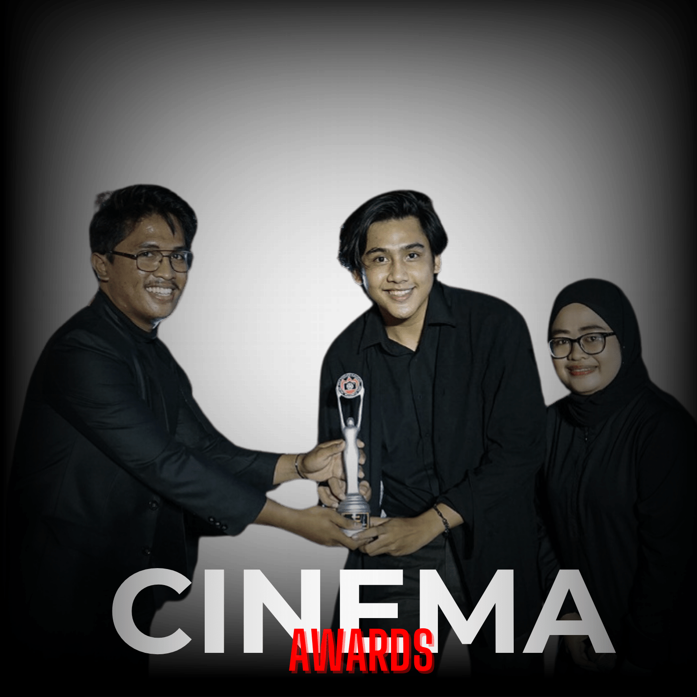

CINEMASK
15 tahun bukan masa yang singkat, setelah 15 tahun berdiri, banyak hal yang telah dicapai dan dilaksanakan oleh UKM CINEMA UNJA, dan di acara Cinemask kali ini di mana tempat berkumpulnya seluruh anggota dan alumni untuk merayakan hari jadi Cinema unja yang ke 15.Semoga Cinema UNJA selalu terus berkarya dan memberikan inspirasi melalui karya-karya sinematiknya!
CINESENSATION
CINESENSATION adalah acara screening film yang dihadiri oleh beberapa komunitas film yang ada di Kota Jambi, dan CINEMA UNJA juga ikut mengundang khalayak umum untuk bergabung menikmati acara yang akan berlangsung!
BUKBER CINEMA
Setiap tahun, UKM Cinema UNJA menggelar "BUKBER CINEMA," acara wajib yang bukan hanya sekadar buka puasa bersama, tetapi juga menjadi simbol silaturahmi antarangkatan dan reuni generasi UKM Cinema. Dalam suasana hangat, acara ini merajut keakraban antara anggota baru dan senior, memberikan ruang bagi berbagi pengalaman dan kreativitas di dunia perfilman. "BUKBER CINEMA" bukan hanya ajang berkumpul angkatan, tapi juga menjadi jembatan nostalgia dan pertemuan alumni dengan keceriaan pemutaran film dan kegiatan menarik, menjadikannya bukan sekadar acara rutin, melainkan simbol semangat kekeluargaan yang terus berkobar dalam perjalanan UKM Cinema UNJA.
MAKRAB
MAKRAB di UKM Cinema UNJA adalah acara tahunan yang penuh keceriaan dan semangat persaudaraan. Dalam atmosfer hangat, MAKRAB menjadi momen istimewa untuk mempererat tali keakraban antarangkatan, di mana anggota baru dan senior saling mengenal, berbagi cerita, dan menciptakan hubungan erat.
PHOTOSHOOT
Kegiatan PHOTOSHOOT di Unit Kegiatan Mahasiswa Cinema UNJA merupakan serangkaian momen kreatif yang memadukan keahlian fotografi dengan esensi seni perfilman. Dengan latar belakang indah dan atmosfer yang terasa begitu dinamis, anggota UKM Cinema memiliki kesempatan untuk mengekspresikan visi dan imajinasi mereka melalui lensa kamera.
CINEMA FESTIVAL
CINEMA FESTIVAL sukses digelar pada tanggal 30 - 31 Juli 2022 dan diakhiri dengan Cinema Award pada tanggal 1 Agustus 2022 sebagai malam puncaknya di @terasmendalo . Dengan tujuan untuk merayakan ulang tahun Cinema ke-14, perayaan ini tidak hanya digelar untuk anggotanya saja namun juga dapat dirasakan untuk umum.


CINEMA AWARDS
CINEMA AWARDS yang diadakan pada tanggal 1 Agustus 2022 menjadi ajang penghargaan kepada setiap anggota Cinema Universitas Jambi pada tahun 2022. Tiap-tiap nominasinya merupakan hasil dari karya anggota selama setahun sejak 18 Juli 2021 hingga 18 Juli 2022.
CINEMA NIGHT
CINEMA NIGHT 2021 hasil kolaborasi Cinema Unja dan Teras Mendalo terselenggara dengan sangat baik. Terima kasih sudah meramaikan acara kami dan kepada @terasmendalo terima kasih atas kerjasama hebatnya!